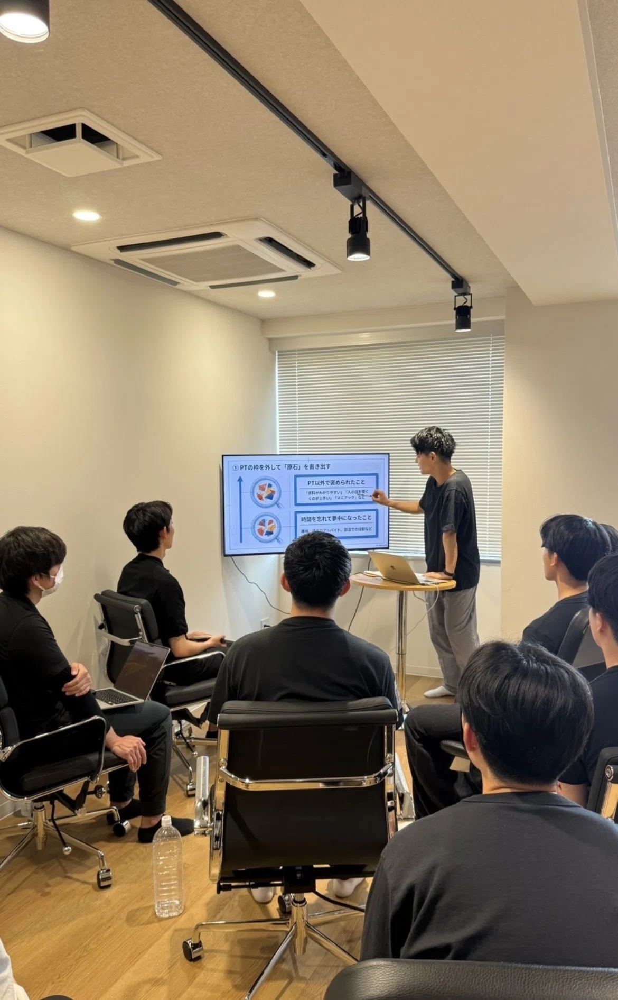
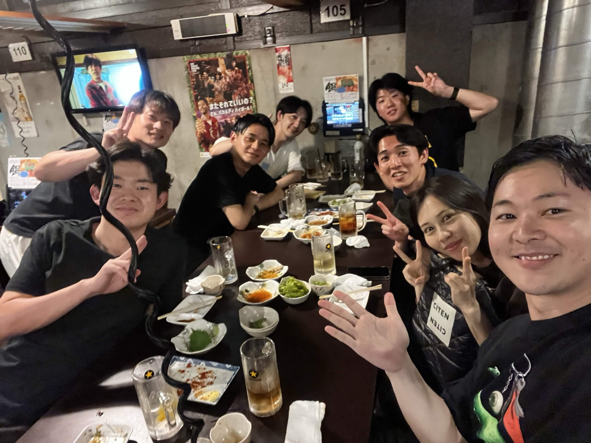
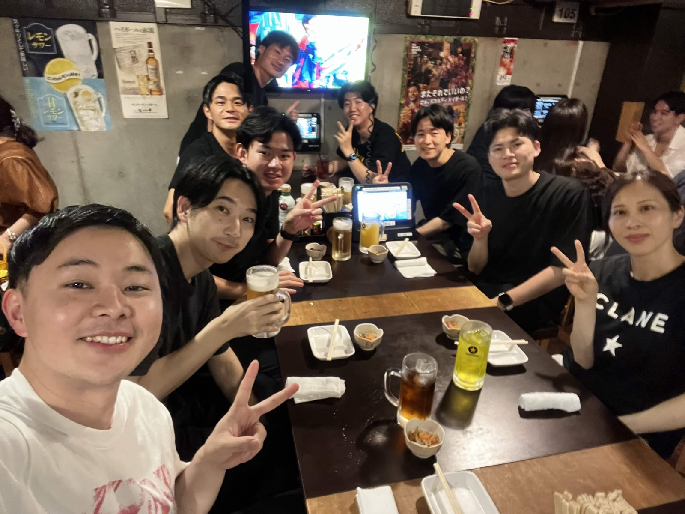

マウントを取らない
肩書きや経歴で測らない。だれもが対等に学び合う。

理学療法士・セラピストのための実践型キャリアコミュニティ
名もなき原石から、
武器を持つ実践者へ。
職場の外に、相談できる先輩と、
切磋琢磨する仲間を。
メンバーアンケート（2026年9月・16名回答）より
こんなモヤモヤ、ありませんか？
必要なのは、ひとりで悩み続けることではなく
「武器」と「仲間」を増やせる環境です。
武器を増やし、磨くことで、
思い描くキャリアを歩む。
無垢研鑽は、理学療法士をはじめとするセラピストのための実践型コミュニティです。
まだ名もなく、無垢な状態からでいい。仲間との研鑽を通じて自分の武器を増やし、磨き上げる。 知識を交換するだけでなく、実際に動いて成果を持ち寄りながら、仕事や人生を少しずつ前に進めていく場所です。
臨床の外で活躍するためのビジネススキル、VIP対応、キャリアの考え方。学校や職場では教わらないことを学びます。
病院・クリニック・自費・独立・企業など、多様なフィールドで働くセラピストと、職場の外でつながれます。
「考えて終わる」ではなく、まず動く。仲間の挑戦に刺激を受け、自分の一歩目を踏み出す後押しがあります。

肩書きや経歴で測らない。だれもが対等に学び合う。
誰かの本気が、次の誰かを動かす。
うまくいった実践は、みんなの財産にする。
画面越しでは伝わらないものを、直接会って交換する。
結果だけでなく、踏み出したこと自体を讃える。
月1回の対面と、日常のオンライン。2つの場で研鑽を続けます。


代表・水野の講義と、メンバー同士のグループディスカッション・ワーク。キャリア戦略や集客、VIP対応など、臨床の外で必要になる実践的なテーマを扱います。


定例会のあとは、そのまま懇親会（飲み会）へ。講義では話しきれなかった相談や、それぞれのキャリアのリアルな話が飛び交います。はじめての方も、ここで一気に打ち解けることが多い時間です。
要確認：写真・動画は後日撮影分に差し替え予定
定例会の間も、Discord上で情報共有・質問・相談ができます。取り組みの成果や悩みを日常的に共有し、メンバー同士で解決につなげます。要確認：案件の募集もDiscordで流れるか

キャリア相談、事業プランの壁打ち、価格設定など、代表の水野と一対一で相談できる時間です。「どんな仕事を増やしていきたいか」を伝えておくことで、次の機会につながったメンバーもいます。
理学療法士。整形外科クリニックで3年間、約2万人の施術を経験。当時の給与は16万円。独立当初は売上ゼロの日もあった。
そこからコツコツと積み上げ、現在はWell Body株式会社 代表取締役として、オフィス出張施術「Offi-Stretch」（累計70社以上に導入）と店舗「CEL」を運営。サッカー日本代表選手やJリーガーのケアも担当する。
自身が遠回りしてきたからこそ、「何事もショートカットできるに越したことはない」と考え、後に続くセラピストの武器を増やす場として無垢研鑽を立ち上げた。
入会の決め手は「水野さん」
入会の決め手を書いた16件のうち、12件に「水野さん」が登場しました。
「サッカー選手のパーソナルを行っている水野さんに、直接話を聞けること」（理学療法士・3〜5年目）
アーティストに帯同し、コンディショニングをサポートします。要確認：掲載できる範囲の具体例
オフィス出張施術「Offi-Stretch」や店舗「CEL」など、Well Bodyの現場で経験を積めます。要確認：業務内容
セラピスト向けセミナーの企画やスライド作成を、メンバーのチームで担当した例があります。
プロサッカー選手のパーソナルを担当できる人材を育てるプロジェクトも進んでいます。要確認：現状と掲載可否
メンバーの31%が「仕事・案件につながった」と回答（メンバーアンケートより）
※ 案件の紹介は、入会によってお約束するものではありません。要確認：表現
学生から経験10年以上まで。メンバー16名のアンケートから、無垢研鑽のリアルをお伝えします。

職種
経験年数
主な働き方（複数回答）
関心のある領域（複数回答）
出典：無垢研鑽 メンバーアンケート（回答期間 2026年9月19日〜21日／16名回答）
マウントを取らないというルールがあり、一年目の自分は特に、わからないことが多い中で、経験年数のある方々が優しく関わってくれる。とても居心地の良い場所です。
作業療法士・1〜2年目熱意あるセラピストがフラットな立場で意見交換ができる場。挑戦がベースにありつつ他人の意見をリスペクトできる雰囲気で、やりたいことを相談・実践するのに抵抗が全くありません。
理学療法士・10年以上メンバー同士でお互いを尊重し、高め合っていける環境。コミュニケーションも取りやすく、初めて参加した方でも馴染みやすい雰囲気があります。
理学療法士・3〜5年目医療やリハビリの世界では「自分の専門分野が正しい」となりがち。ここはそれぞれの経験や専門性を尊重しながら意見交換できるところに魅力を感じました。
理学療法士・6〜9年目理学療法士が活躍できるビジネススキルやVIP対応を学べること、さまざまなフィールドで働く療法士とつながれることが決め手でした。
理学療法士・6〜9年目水野さんの真面目な部分と面白い部分が、周りにいい雰囲気を生んでいて、すごく楽しいです。
理学療法士・10年以上女子プロサッカー選手の担当を始め、転職も実現理学療法士・6〜9年目
セミナー登壇で約500人を集客し、副業を2つ開始
独立を決意理学療法士・10年以上
考えていたことを行動に移し、地域の病院でセミナー開催をサポート理学療法士・6〜9年目
整形外科でのアルバイトが決まり、サッカーのトレーナーに自分から声をかけてインターンの話を進めた学生
InstagramなどのSNS発信をスタート（複数名）
要確認：インタビュー実施・掲載許可
要確認：インタビュー実施・掲載許可
要確認：インタビュー実施・掲載許可
ひとつでも当てはまれば、それが入口です。
メンバーは学生から経験10年以上まで。理学療法士だけでなく、作業療法士やトレーナーも参加しています。「経験が浅くても大丈夫？」という不安は、多くのメンバーが入会前に抱えていたものです。
一方で、知識だけを受け身で集めたい方には向いていないかもしれません。無垢研鑽は、動く人を仲間が応援する場所です。
まずは代表・水野とのオンライン面談から。
募集期間 2026年10月〜11月 ／ 定員 最大5名
下のボタンのフォームから、希望日時を送ってください。
無料。活動内容や雰囲気、不安なことを直接相談できます。要確認：所要時間
面談後、入会を希望される方は手続きへ。要確認：審査の有無・支払方法
Discordに招待後、次回の定例会から参加できます。
税抜 1,500円
入会金はかかりません
面談だけでもOK
会費に含まれるもの：定例会／Discord／水野との1on1（初回）要確認：懇親会費の扱い
対面の活動は月1回の定例会（原則 第2土曜日 15:00〜18:00）が中心で、それ以外はDiscordで自分のペースで参加できます。入会前の不安として最も多かったのが「時間が取れるか」でした。
要確認：定例会を欠席した場合のフォロー（録画・資料共有など）
「マウントを取らない」をルールとしており、経験年数に関係なく意見や質問ができる雰囲気です。
「ついていけるのか不安でしたが、実際に参加すると、お互いを尊重し合いながら学べる環境でした。」理学療法士・3〜5年目大丈夫です。現在も学生や経験1〜2年目のメンバーが参加しています。
「わからないことが多い中で、経験年数のある方々が優しく関わってくれ、とても居心地の良い場所です。」作業療法士・1〜2年目要確認：学生の参加条件・料金
作業療法士やトレーナーのメンバーも参加しています。要確認：対象職種の範囲（柔道整復師・鍼灸師など）
入会前に代表・水野とのオンライン面談があります。活動内容や雰囲気について、気になることを直接聞いてから判断してください。
月会費は1,650円（税込）で、入会金はかかりません。入会前のオンライン面談も無料なので、内容を聞いてから判断できます。
メンバーアンケートでは、88%が「セラピスト同士のつながり」、62%が「相談できる人・目標にする人」、50%が「キャリアの選択肢が広がった」と回答しています。
定例会の会場は東京・南青山のWell Body本社です（地図）。Discordでの交流は場所を問わず参加できます。
要確認：定例会のオンライン参加の可否
要確認：退会方法・最低在籍期間の有無
まだ名もなくても、
大丈夫。
ひとりで悩み続ける時間を、仲間と動く時間に。
まずは代表・水野と話してみませんか。